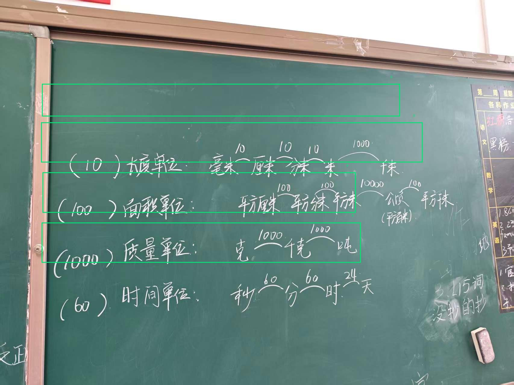

总评摘要
板书内容为小学数学常见单位（长度、面积、质量、时间）的进率梳理，知识点准确，涵盖了毫米到千米、平方厘米到平方千米、克到吨、秒到天的单位换算进率，板书清晰，知识点呈现正确。
批改预览 (点击可查看大图)

逐题详细分析
✅ 正确
题目 1
考察长度单位换算进率，板书正确呈现毫米、厘米、分米、米、千米间的进率（10、10、10、1000），知识点准确。
✅ 正确
题目 2
考察面积单位换算进率，板书正确呈现平方厘米、平方分米、平方米、公顷、平方千米间的进率（100、100、10000、100），知识点准确。
✅ 正确
题目 3
考察质量单位换算进率，板书正确呈现克、千克、吨间的进率（1000、1000），知识点准确。
✅ 正确
题目 4
考察时间单位换算进率，板书正确呈现秒、分、时、天间的进率（60、60、24），知识点准确。